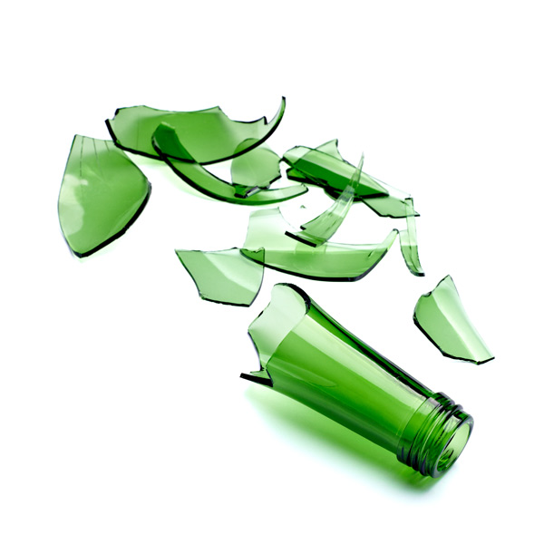
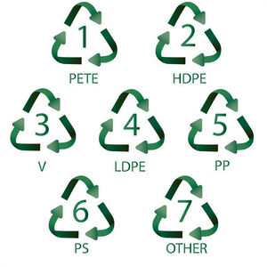
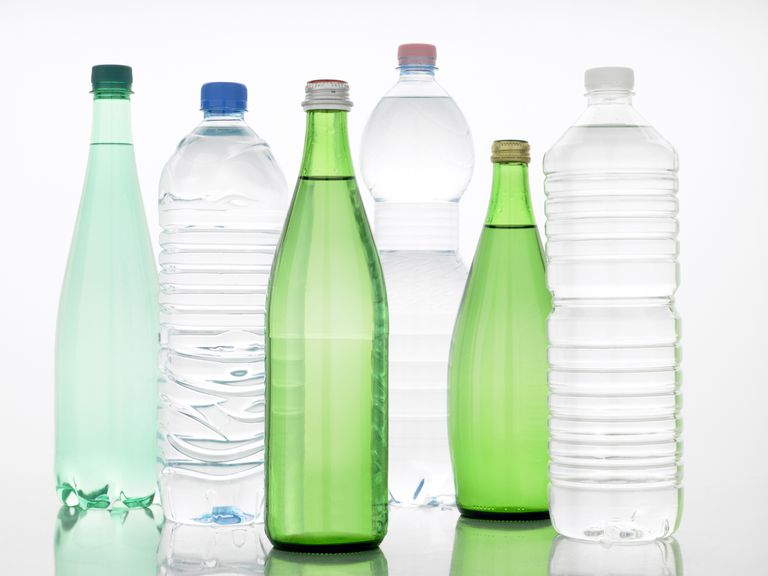

Avoid breaking glass since shattered glass
is hazardous to workers and is sometimes
not accepted.

Plastics often have a recycle logo stamped onto
it with a number that indicates the grade of
plastic. A number 1-7 is usually acceptable but
some recycling centers may be more restrictive.

Rinse out liquids from aluminum, plastic,
and glass bottles.